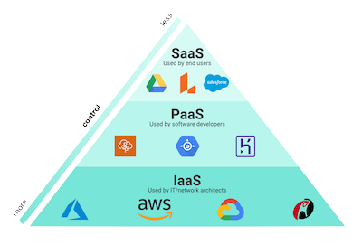

class: cloudtitle,center, middle # **Techniques for Moving Data in the Cloud** *using Azure* ### Pat Bills, IT Services ADS Session #4 of the 2021 [MSU Cloud Fellowship](../session_moving_data) --- # Our toolbox so far: Resources - Cloud compute resources - virtual machines: Windows or Linux - Cloud storage resources - Blob storage : cheap and weird - Files Storage : less cheap, network-like - Disk Storage : less less cheap, like a pluggable disk - *new* "Data Lake" : essentially Blob storage, but with actual folders (hierarchy) and more security  --- # Our toolbox so far: Connections how do we connect to cloud resources from our computer? - Compute connections = remote control - Remote Desktop for Windows - ssh command line for Linux - Cloud storage connections = upload/download/manage - cloud storage explorer on your laptop - Azure Portal - command line - storage "REST" (web) interface (if enabled) <!-- to do exercise using cloud storage for web site-->  --- # Our toolbox so far: Storage as a connection How do we keep our data when we are delete resources (machines) as we use them? *persistent storage is the connection between ephemeral resources*  --- # Getting data into cloud storage Session 3 exercises: [Using Azure Cloud Storage](../session_cloud_storage/exercise_using_azure_cloud_storage) Did any one have chance to try these, and have any issues? Any questions about these activities? --- # Networks and data movement *Normally we use our own computers to transfer data, but that can be very inefficient* If: - the data you want is on the web somewhere (or google drive, etc), and - you download files to your laptop, - then upload those files to storage... transfer is limited by your home or office network <hr> ``` web ->+ +--> cloud storage | | |--> your laptop -->| (slow uploads) on broadband ``` <hr> For example, using a web browser to download data, then using storage explorer to upload to Azure --- # Networks and data movement: cloud to cloud A better solution is to utilize cloud resources to move data. You control those cloud resources via your computer, you only send control signals over your network, not data. <hr> ``` ( --Azure--) web --> cloud vm --> cloud storage ^ | remote control ( --home/office network-- ) ``` <hr> For example, use the Virtual machine as a transfer system, as described in previous slide --- # Cloud to cloud storage big picture Using Azure File Share storage is convenient way to access from a VM Assuming your data is on the web somewhere (or on a remote system): 1. create storage account and File Share 1. create virtual machine, with IP address and internet access 1. log-in to virtual machine remotely (remote desktop or ssh) 1. attach File Share to virtual machine (see exercises) 1. run program to upload data to the attached file share --- # Moving Data with VM Part 1: Using a VM to acquire data You may need to ensure the VM you have has enough disk space to hold your data (temporarily) - Use Browser to download data - log-in to google drive/One drive with Browser - command line tool like `curl` - curl can download the content/code of a webpage, or a linked file - example, for a file on website https://support.spatialkey.com/spatialkey-sample-csv-data/ curl command is `curl -O https://support.spatialkey.com/wp-content/uploads/2021/02/FL_insurance_sample.csv.zip` see https://curl.se/docs/manual.html "Download-to-a-File" section - copy from file server using filezilla or command line tool like 'scp' (e.g. MSU HPC) Notes: - could use service like Google drive instead of cloud storage, but requires manual transfer - time to transfer storage manually has Azure costs and your time costs but works in a pinch! --- # Moving Data with VM Part 1: upload data to Azure Files storage 1. create a Storage account and File Share 1. upload your data using the Storage Explorer or other data movement method 1. create a Virtual Machine. since the data will stay on the File Share (but see below for performance) you may not need to provisions a VM disk much larger than 30gb 1. after the VM is started and you are logged in, see methods below for attaching File share 1. run your software but adjust the code or select folders on the connected file share (e.g. `D:\\` on windows or the mount path in linux) 1. from the VM, save output files the attached File Share 1. when finished, close and delete the VM and associated resources 1. access output files using Storage Explorer, or another method exercise [How to Use Azure Files with Windows and Linux VMs](how_to_azure_files) --- # Data Performance: Staging *If connection to "Azure Files" is not fast enough you could...* - "Stage" your data to the VM disk 1. attach azure files 2. copy input data from azure files to VM Disk 3. do your work, save output files 4. copy out data from VM disk to Azure files (or blob storage ) --- # Data Performance: Using a data disk *If connection to "Azure Files" is not fast enough you could...* - Use a "managed disk" for a "data disk" analagous to portable hard drive Note: *azure uses term "managed disk" for their newever option, we will never use 'unmanaged' disks* 1. create a 'managed disk' large enough to hold your data 2. when creating a VM, add a second disk and select this managed disk 3. do most of your work on input/output files on managed disk 4. delete VM but not disk 5. repeate with new VM. note these disks can't be mounted to multiple VMs at once - Linux: [Use the portal to attach a data disk to a Linux VM](https://docs.microsoft.com/en-us/azure/virtual-machines/linux/attach-disk-portal) - Windows: [Attach a managed data disk to a Windows VM](https://docs.microsoft.com/en-us/azure/virtual-machines/windows/attach-managed-disk-portal) Downside: you can only access the contents of a managed disk when attached to a VM. When you download the disk, you download in "Virtual Hard Disk" (VHD) format which requires your own Virtual machine system on your laptop to work with. --- # Data Transfer Service: Azure Data Factory Rather than creating a VM just to move data, Azure has a **"Data Factory"** service : <br> a system for [ETL](https://en.wikipedia.org/wiki/Extract,_transform,_load) between many kinds of **sources** and **sinks** Two types of data movement in data factory: - Data Pipeline = files or non tabular data moved from one source to sink and possibly processed on the way - example: 1000s of files on a website in zip format, download, unzipped, put into cloud storage - Data Flow: structured data (tabular) read in each column processed, transformed, or validated and imported into a tabular data system - example: a [CSV](https://www.freecodecamp.org/news/what-is-a-csv-file-and-how-to-open-the-csv-file-format/) file that has columns that need cleaning or converting and appended to a database system --- # Data Transfer Service: Azure Data Factory *GUI data transfer workflow designer*  --- # Data Transfer Service: Azure Data Factory advantages to using Data transfer service vs VM: - design complex "pipelines" with GUI/Portal (code not always necessary) - can do significant processing after acquiring the data - many possible types of data sources and sinks - can work with structured data, not just files ("Dataflow") - given a list of items to process, can do in parallel - can set to automatically retry on failure disadvantages: - complex to learn for simple work (e.g. simple data copy) - not code friendly, if you need code ( e.g. can export as code, but format is obtuse (MSFT says: use the GUI) - oriented for enterprise data systems ( see first point above) --- # Azure Data Factory : Example 1 Copy data from any source (even another cloud) to Azure cloud storage - you create "linked services" that describe the source and sink for data - source = Linux File system using ssh log-in. I had to enter my MSU netid and pw and ssh key - sink = storage account, had to grant permission for the data factory to access storage account - create a "pipeline" use the "copy activity" - for the source can indicate it's a whole folder, and all it's contents - for sink set the storage account, indicating which container - manually trigger, wait 10-15 minutes. can copy a very large number of files - COULD have additional steps (e.g. unzip or other file processing)  --- # Azure Data Factory : Possible Use-case ### calculate [bioclim variables](https://www.worldclim.org/data/bioclim.html) for Continental US (CONUS) Input Data - [PRISM](https://prism.oregonstate.edu/) interpolated climate data, 4K grid of CONUS - 12 months X 39 years X 4 variables = 1392 files, zipped for download - example file: PRISM_tmax_stable_4kmM3_201812_bil.zip Process - for each year, for each of 4 variables, download 12 months, unzip files - read those and input into bioclim variable function - outputs 19 biologically significant variables, as "raster" layers (maps) - save as geo files (tiff) for biodiversity model inputs (19 X 39 = 741 files ) *Could we leverage data factory to do this processing in parallel?* Organizing data using cloud services = **data orchestration** --- # Azure Data Factory : Fellowship Projects **Could a data transfer service help your research processes?* Data Factory has many moving parts for those new to it and to cloud computing. Each detail is not complex, but the documentation is often minimal and the examples from Azure may not be applicable to research (mostly for corporate wor) However for a research process that requires a large number of inputs, or recurring inputs (observations such as weather, behavior, etc) having a system to manage files and prepare them for the next step can be really valuable. A successful cloud fellowship project could focus on using a service like Data Factory for intensive data preparation. This may not be an end-product but is an essential component and shows the value of cloud services. --- # Azure Data Factory : Platform as a Service  The [NIST definition of cloud computing](https://nvlpubs.nist.gov/nistpubs/legacy/sp/nistspecialpublication800-145.pdf) refers to "service levels " - Infrastructure (IaaS): Networks, storage, disks, VMs,etc - Platform (PaaS): everything in between - Software (Saas): applications : Google Drive, Office365, etc Azure Data Factory is the first "Platform as a Service" we've encountered. You don't have to create a virtual machine and install software to your work - the computing aspect of data movement is provided and managed. *Image from [Understanding the basics of cloud computing](https://www.lucidchart.com/blog/cloud-computing-basics) from LucidChart, which is a "Software As A Service" company* --- # Resources This seems to be very comprehensive and good introduction that may be a good place to start in addition to Microsoft's documentation Cathrine Wilhelmsen [Beginner's Guide to Azure Data Factory](https://www.cathrinewilhelmsen.net/series/beginners-guide-azure-data-factory/) Optional Reading: If you are interested or think you need Data Factory and would like to learn the details, the MSU Library has this book as an electronic resource: [Azure Data Factory by Example](https://magic.msu.edu/search~S39?/Yazure&searchscope=39&SORT=D/Yazure&searchscope=39&SORT=D&SUBKEY=azure/1%2C398%2C398%2CB/frameset&FF=Yazure&searchscope=39&SORT=D&1%2C1%2C) Swinbank/2021. (requires MSU log-in to view). It's oriented to the "Data Engineer" and not researcher, but there may be an example that fits your need. --- # Notes on TextBook Chapter 3: Storage Programming Chapter 3 [Using Cloud Storage Services](https://s3.us-east-2.amazonaws.com/a-book/using_storage.html) in [Cloud Computing for Science and Engineering](https://cloud4scieng.org/) This chapter is written for python programmers, and is mostly valuable to those with some cloud experience and looking to incorporate cloud storage into their python programs. Hence it's optional reading or for skimming, later reference. About AWS "S3" Storage: - really popular library called 'boto3' - S3 was first, and widely used hence considered a 'standard' - some research software projects support S3 storage directly (but few support Azure) - Some storage hardware products compatible with S3 software - if you *need* S3 compatibility, there is a way to do it on azure (but complicated): https://min.io --- # Notes on TextBook Chapter 3: Globus <img src="globus_logo.png" align="right"> Chapter 3 gives an introduction to the "Globus" file transfer and sharing service. - different kind of service and takes some learning - great at tranferring large amounts of data between endpoints (typically HPC systems) - Great for sharing files with individuals or small groups from local systems - Provided by institutions, e.g. MSU HPCC - can work on your laptop to transfer to/from institutions - [connections to cloud systems available](https://www.globus.org/connectors) *MSU has a connection to google drive (only)* *Examples* - Transferring 15000gb of genomics data in a couple of hours without error. - Share data from an HPC drive to specific work group members - Upload data & results from HPC to Google Drive --- # Sharing files with Azure Blob Storage - Use case: you have files you want to share with a colleague but don't want to grant access to all of your Storage - Or : you want colleagues to share files that you can later process with cloud procedure. - AND : you want to keep it private and secure - save files to Blob Container (using one of the techniques above ) - use the portal to obtain a special access address : see [Creating a Storage Account SAS token](creating_a_container_sas_token_from_the_azure_portal) - when creating the token, set a short expiration data, optionally set to only allow from colleagues [IP Address](https://www.pcmag.com/how-to/how-to-find-your-ip-address) - share the URL with your colleague. - colleague can use the URL to 1) download file using browser 2) upload file using `azcopy` command line or Storage explorer **Q:** *How is this different from Google drive sharing?* You may be able to accomplish much of the same thing with Google Drive, but with cloud storage, you could save files from a cloud VM or other output-generating process --- # Sharing files with Azure Blob Storage: URL? Blob and File storage offers web access with a web URL. Why would you use that? - Many script languages can read/write files to/from the web - Given a URL with SAS token and proper permissions: - also known as "REST" - with the proper URL can read/write files from your programmers see [first activity for this session](../session_moving_data#Activities) --- # Sharing files with Azure Blob Storage: URL and Python - *for python programmers* ( **R** would use `httr`) - `azure_url` here is the temporary URL obtained above, but with a CSV file name in the url. - read the URL from configuration (ask me how) - consider using 'stream' option when getting large csvs from a URL ```python import requests import csv import os azure_url = os.getenv("AZURE_URL") data = [] # see note below* with requests.get(azure_url, stream=True) as r: lines = (line.decode('utf-8') for line in r.iter_lines()) for row in csv.reader(lines): data.append(row) len(data) ``` *Pandas may be a better solution than an array of arrays... --- # Sharing files with Azure Blob Storage: don't go public Azure Blob storage allows you to turn on public sharing - when creating For public access level, change "private" to anonymous... - private means a SAS token or other authentication is necessary - if anonymous anyone with the Storage account URL can download files from it - everytime the file is download counts as network "egress" - don't do this! there is a charge for "egress" (but it's complicated and university-wide) - alternatives - small files: github is commonly used, also https://gitlab.com - large files: consider a data repository e.g. [Dryad](https://datadryad.org/stash) - I don't want to share with EVERYONE: use SAS token method, or Globus, or google drive (sorry it's a pain but necessary) <!-- Could you make a website this way? Yes, but don't. There are many free options for this ([Github Pages](https://pages.github.com/), [gitlab](https://docs.gitlab.com/ee/user/project/pages/), [Netlify](https://www.netlify.com/), others) --> For more info see [Configure anonymous public read access for containers and blobs](https://docs.microsoft.com/en-us/azure/storage/blobs/anonymous-read-access-configure?tabs=portal) --- # Discussion/Questions ---